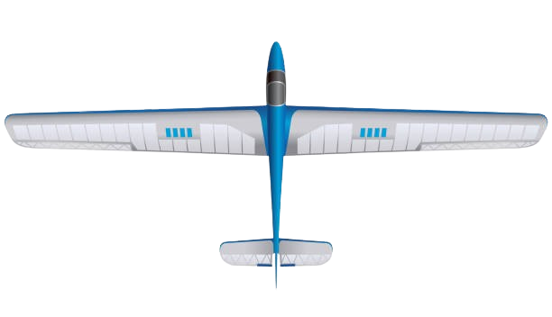

Weather Radar
Flying Site Map
Current Conditions: Isle of Man
air
Wind Speed
-- mph
Gusts: -- mph
Direction: --

Wind Direction
--
device_thermostat
Temperature
--°C
humidity_percentage
Humidity
--%
Last update: --
Street View
Forecast
Next 24 Hours
What Glider to Use
Loading recommendation…